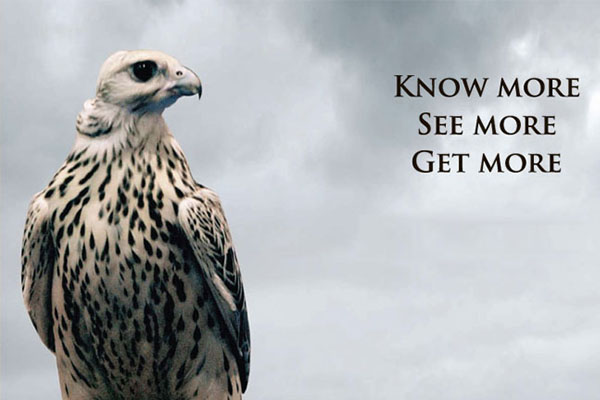

الصياد لا يقنص.. (طائر الكركي)
الاسم: كركي شائع و المعروف علميا (Grus grus) الوصف: هو طائر كبير الحجم قد يصل طوله الى 130 سنتم و فتحة جناحيه الى 240 سنتم، رمادي اللون، اسود و ابيض الرقبة و احمر الرأس. الهوية: ي…
الاسم: كركي شائع و المعروف علميا (Grus grus) الوصف: هو طائر كبير الحجم قد يصل طوله الى 130 سنتم و فتحة جناحيه الى 240 سنتم، رمادي اللون، اسود و ابيض الرقبة و احمر الرأس. الهوية: ي…
للصيد مزاجه الخاص وعوالمه الواسعة وأدواته المختلفة . واذا كان الصيد بالبندقية يحتاج الى الدقة والسرعة في التصويب، فإن الصيد بالصقر يحتاج الى صبر وشغف كبير بالتحدي، وعشق تذليل الصع…
تحقيق البطولة يحتاج الى وعي وتدريب وإصرار وإرادة صلبة، وهذه العناصر أصبحت حواس متأصّلة في عقل وروح الرامية المحترفة راي باسيل التي لا يمكن لها الا ان تكون منافسة خطرة أينما حلّت .…
أيها الصياد ..السلاح هو الصديق الوحيد الذي لا يمكنك الوثوق به..ثق فقط بمسؤوليتك ومهاراتك في ان ترفع حذرك في موسم الصيد الى الحد الأقصى .. وعيك هو من يصنع الامان .. انت صياد مسؤول…
تشارك شركة "غولد تروفي" اللبنانية لرحلات الصيد العالمية في معرض الصيد والفروسية في أبو ظبي 2015.. مثبتة حضورها المحترف في عالم تنظيم رحلات الصيد الى رومانيا وايسلندا والمغرب.. ، و…
لا يمكن لزائر معرض الصيد والفروسية في أبو ظبي الا أن يشعر ويشاهد حركة مهرجان الشيخ منصور بن زايد للخيول العربية الأصيلة، الذي يمتد جغرافيا على مساحة واسعة في أرض المعرض، ومعنويا ا…
في كل سنة تؤكد أبو ظبي على قدرتها في إقامة معرض الصيد الفروسية بنكهته العالمية بنجاح كبير، من خلال إستقطاب أهم وأكبر الشركات العالمية والعربية المتخصصة ببنادق وعتاد الصيد البري وا…
أكدت مديرة مهرجان الشيخ منصور بن زايد آل نهيان العالمي للخيول العربية لارا صوايا، خلال مؤتمر عقد في معرض الصيد والفروسية في ابو ظبي 2015، إن 8 تشرين الثاني سوف يشهد حدثا مهما على…
شهد أمس الأول، إنعقاد الإجتماع الرابع لأعضاء اللجنة التنفيذية للاتحاد الدولي"ايفهرا"، الذي يقام برعاية مهرجان سمو الشيخ منصور بن زايد آل نهيان العالمي للخيول العربية في قاعة اننتا…
الاسم: دخّنة او قميحي اودرسة الشعير، و المعروف علميا" (Emberiza hortulana) الوصف: هو طائر صغير الحجم بني اللون، زيتي الرأس ومنقش الصدر الهوية : يعتبر طائر الدخّن من أطيب وأشهى الط…
هذه الخرائط نفذتها جامعة البلمند لصالح جمعية حماية الطبيعة في لبنان spnl الحقوق محفوظة
ارتبط مهرجان الشيخ منصور بن زايد آل نهيان العالمي للخيول العربية ارتباطا وثيقا كشريك رئيسي وراعٍ للمعرض الدولي للصيد والفروسية على مدى الأعوام السابقة، وها هو اليوم يتحضر ليشارك ب…

يعتبر المعرض الدولي للصيد والفروسية في أبو ظبي أهم معرض في الشرق الأوسط على الاطلاق، ومن أهم المعارض العالمية التي تستقطب جمهورا كبيرا من هواة الصيد والفروسية وهواة التخييم ورياضا…
قد يكون غريباً جداً أن نصنّف البطاطا ضمن لائحة المأكولات الغالية الثمن في العالم، إلاّ أن هذا هو الواقع مع البطاطا المسماة La Bonnotte، التي تعتبر ملكة البطاطا وتتربع على عرش المر…
عا ذكر الصيد والنغمة الشجية لعبت غيرة الصياد فيي ذكرت عهد الصبا وعهدو ودلالو وعا درب النبع ملقانا سوية يا صياد البدر ساعة كمالو عند نهدة لقا عن طيب نية حبيتك محبة العذرى وجمالو مت…
انتخب الاتحاد العالمي للصقارين (IAF) المدير التنفيذي لنادي صقاري الإمارات ماجد علي المنصوري ، لمنصب نائب رئيس الاتحاد لمنطقة الشرق الأوسط وشمال إفريقيا،وسط منافسة شديدة في ختام أع…
للصياد مزاجه وطرائفه التي يستوحيها من عالم الصيد والطبيعة والتي عادة ما تكون ممزوجة بعفوية رائعة .. هذه الصورة من إخراج الصياد اللبناني الياس سلهب الذي أراد لكلبيه new look ربما ل…
لا شك إن عدد الإناث في عالم الصيد قليل، ولكن لكل صيادة عالمها الخاص الممزوج بالعفوية والطموح والطرافة والجرأة،وهذا ما يجعل حضورها وسط الصيادين حضوراً مختلفاً ومدهشاً،فيكون تحت مرم…
هذه الخريطة نفذتها جامعة البلمند لصالح جمعية حماية الطبيعة في لبنان spnl الحقوق محفوظة
نشرت الزميلة "جرس سكوب" صورا لبعض الصيادين يعرضون طرائد من حيوانات وطيور على سياراتهم مع تسمية اسمائهم، تحت عنوان " اللبنانيون أقوياء فقط على الطيور " الى جانب اسم الصياد مع صفة "…
الصورة من أرشيف الصياد اللبناني ايدي معلوف
أنا صيّاد في عندي عقيدة. بحُب الصيد ما بينقص رصيدي. أذا بيملكوني الكون كلو. متل قوّاس ما بظلم طريدة. الصيد أجمل هواية أذا تحلّو. القوّاسين بعقول الرشيدة. وما خلّو الطير يجفل من مح…